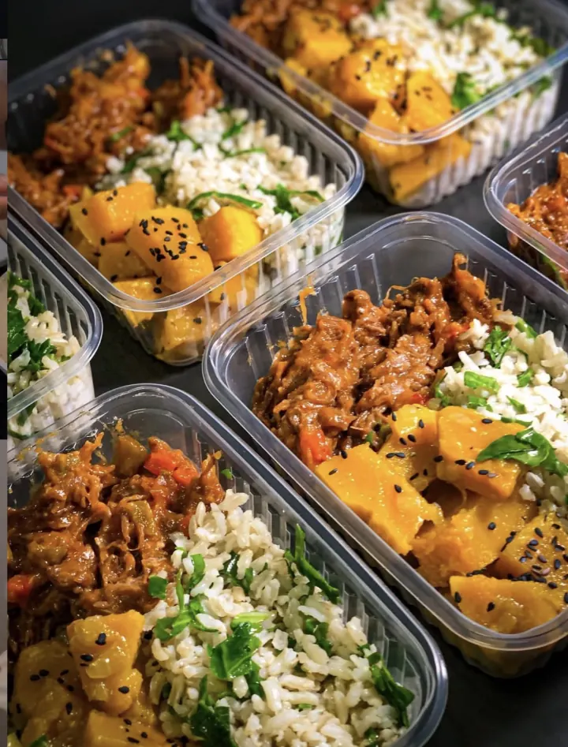

CARNE BOVINA
1. Carne Desfiada com Abóbora Assada
Carne bovina desfiada, arroz temperado com cheiro-verde e abóbora assada.
Comida caseira de verdade com sabor de prato feito na hora. Nosso preparo inteligente preserva o sabor autêntico reduzindo as calorias pela metade: 35g a 40g de proteína e apenas ~420 kcal em 380g de comida nobre.
Você come um prato cheio, mata a fome e emagrece sem passar aperto. Kit da semana a partir de R$ 19,90 por refeição (~24.900 Gs), preparado artesanalmente no Edifício Level (em frente ao Lago da República). Produção sob agendamento semanal com vagas estritamente limitadas por lote.
Por que um almoço de delivery te estufa, engorda e te dá fome 2 horas depois, enquanto a nossa marmita te mantém saciado a tarde inteira? O segredo não é passar fome — é o método de preparo.
5, 10 ou 20 potes. Monte com os pratos do cardápio semanal ou peça porções sob medida para sua meta ou plano nutricional.
Potes congelados artesanais prontos para armazenar no seu freezer em Ciudad del Este. Comida fresca garantida para a sua rotina inteira.
Direto do freezer para o micro-ondas, no próprio pote livre de BPA. Coma quente e suculento. Zero panela e zero louça na pia.
Almoçar bem em Ciudad del Este não precisa custar caro nem tomar todo o seu tempo livre.
Ir ao mercado, picar carne, vigiar fogão e lavar louça todos os dias consome em média 15 horas por semana. Faça o cálculo de quanto isso realmente custa:
São R$ 600,00 por mês jogados fora só em tempo na pia e no fogão — além do custo da comida!
São R$ 1.800,00 por mês de prejuízo silencioso em horas que você poderia estar produzindo ou descansando.
Comida de verdade a partir de R$ 19,90 por refeição (~24.900 Gs). Você come melhor, protege sua saúde e coloca 15 horas livres no bolso.
A compra dos ingredientes é feita depois que os pedidos fecham — é assim que a carne chega fresca e a gente não precisa de conservante. Por isso a semana tem um limite físico de 25 kits, que é o que a cozinha produz com rigor artesanal no Edifício Level.
Almoço de segunda a sexta para 1 pessoa (5 refeições práticas)
Almoço e jantar de segunda a sexta para 1 pessoa (10 refeições)
2 semanas de almoço e jantar para 1 pessoa (ou 2 semanas de almoço para 2 pessoas)
Esse é exatamente o problema que o nosso método resolve. O pote vai ao ultracongelamento ainda quente, então o gelo se forma em cristais microscópicos que não rompem a fibra da carne. Resultado: a água fica retida dentro do alimento em vez de escorrer no prato. O feijão mantém o caldo cremoso e a carne continua suculenta.
Porque não somos uma indústria de congelados com comida parada em galpão. No Edifício Level, cada ingrediente é fresco do dia, as carnes são pesadas rigorosamente grama por grama em balança digital e o ultracongelamento é feito a quente para preservar a umidade natural. Para manter esse padrão de alta gastronomia sem soltar água no prato, nossa cozinha atende exclusivamente 25 famílias por ciclo semanal.
Sim. Polipropileno de grau alimentício, 100% livre de BPA, feito para suportar congelamento profundo e aquecimento sem liberar odor nem alterar o sabor dos alimentos.
Pode. Escolha a quantidade de cada prato do cardápio semanal, ou envie as gramaturas da sua nutricionista — nossa nutricionista responsável alinha e pesamos componente por componente na balança digital.
Sim! Nossa cozinha artesanal fica no Edifício Level, em frente ao Lago da República, em Ciudad del Este. Você pode retirar o seu kit diretamente com horário agendado ou solicitar a entrega climatizada na sua residência ou trabalho em CDE e região.
Até 90 dias a -18°C mantendo sabor, textura e nutrientes. Depois de descongelar na geladeira, consumir em até 3 dias.
Todas as refeições são preparadas com ingredientes frescos e selecionados, pesadas individualmente na balança digital e seladas em potes herméticos 100% livres de BPA. Caso haja qualquer imprevisto com seu pedido, você tem suporte direto e prioritário no WhatsApp.